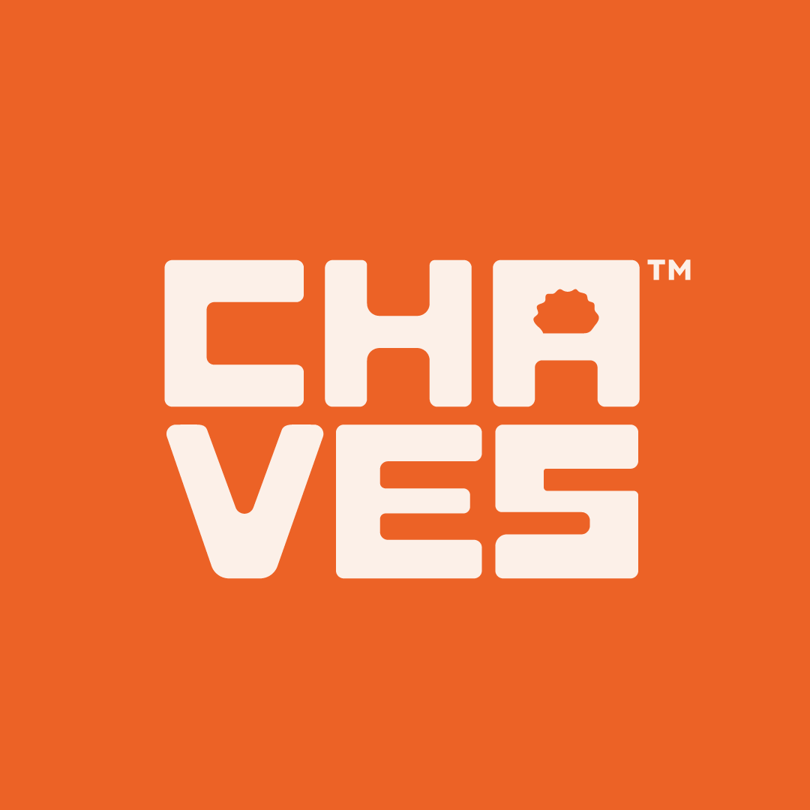
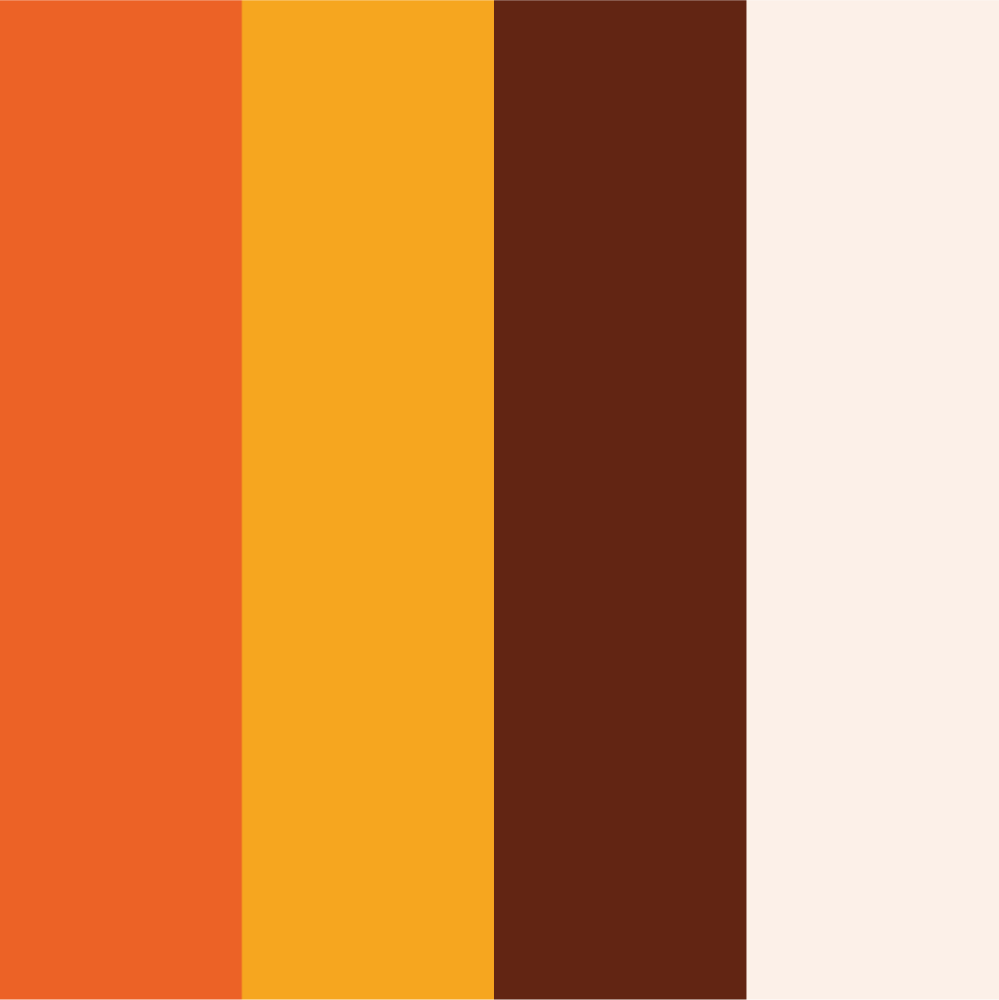
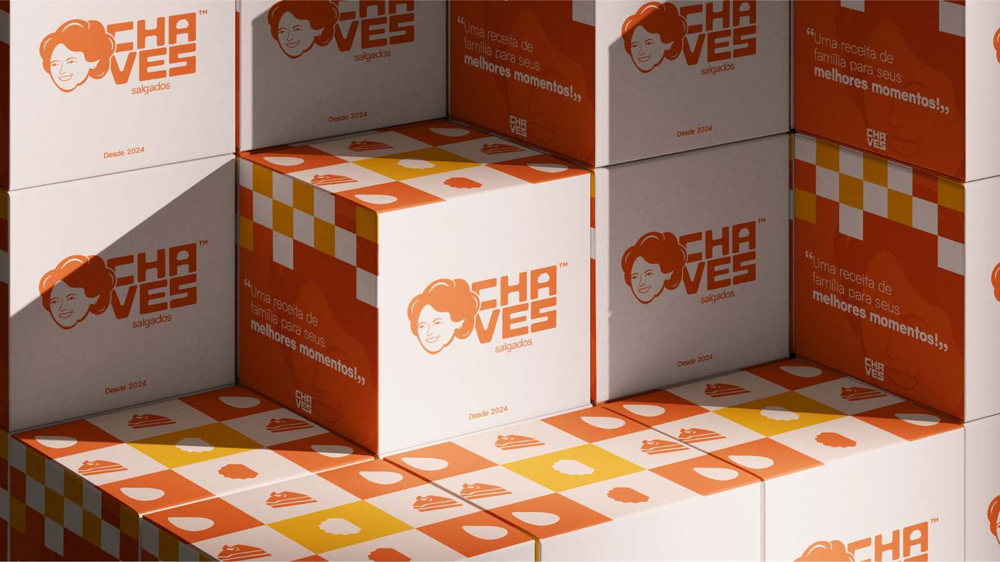

Chaves
Salgados
Uma identidade visual criada para comunicar sabor, proximidade e tradição com uma linguagem marcante e acolhedora.



Uma marca feita para criar memória e abrir o apetite.
A identidade da Chaves Salgados combina personalidade, calor e reconhecimento em um sistema visual preparado para embalagens e diferentes pontos de contato.